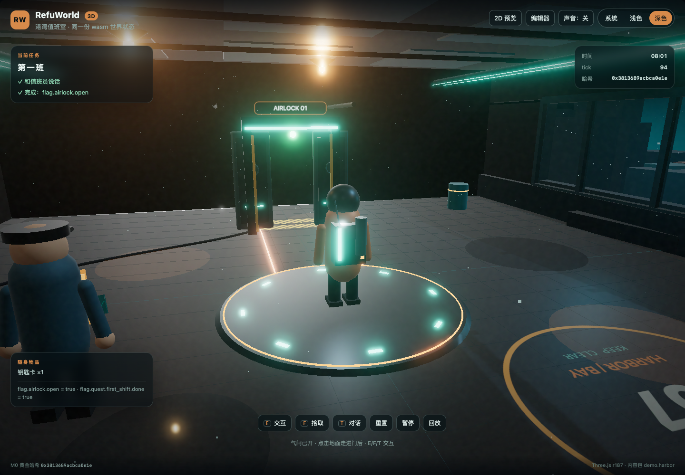

把「世界怎么运转」从引擎里拿出来
RefuWorld 是一个跨游戏、跨引擎的世界系统中间层：Rust 权威内核负责确定性规则、空间、时间与存档；TypeScript/JSON 内容包描述世界；引擎适配器只负责输入、画面、声音和资产。它不是另一个引擎，而是引擎与游戏内容之间的一层。

确定性哈希C ABITS DSL编辑器3D 预览M1 剩余
四件“成功”而不是四张架构图
项目地形图
到哪了：M0 与 M1 主要切片
这里只记录**已经跑过**的事。M1 是主要切片，不是完整 M1；把“切过”当作“全过”会掩盖剩余工作。
- M0 · 可运行内核 2026-11-23 · 8 crates、C ABI、QuickJS spike、坏包 fixture、600 tick 双跑。
- M1 · TS DSL + Web 预览 TS 包与 JSON 包同哈希；2D 预览回放
0xc840fe…。 - M1 · 编辑器 v0.5 布局拖拽、字段表单、对话图、撤销/重做、保存校验回滚、构建试玩。
- M1 · 移动/导航/资产 WASD + 点击寻路；40×40 烘焙网格；逻辑资产依赖与 C ABI
world_zone_assets。 - M1 · 3D 演示 Three.js r187 本地 vendor；同一 wasm 状态；气闸/对话/雨海灯塔。
- 现在 · M1 剩余与 M2 准备 ScriptHost 正式接入、动态导航、真实 5k 基准、编辑器 v0.6。
- 下一步 · M2 生产适配器 Godot GDExtension；同一个包在真实引擎跑出同一局。
可复现的证据
| 证据 | 结果 | 来源 |
|---|---|---|
| Rust workspace 测试 | 13 个通过；clippy 干净 | cargo test --workspace |
| 内容测试 | 6 条 PASS：港湾 3 + 夜市/温室/环形站各 1 | worldc content-test |
| 黄金回放 | 0xc840fe2090a0a085（Headless / C ABI / wasm） | run_m0.sh / run_m1.sh |
| TS 包一致性 | 包哈希 sha256:66125c46…46fe29e，与 JSON 包一致 | worldc ts-build --compare |
| 5k 合成基准 | Apple M1 Pro release ≈ 0.01 ms/tick（仅 tick/日程/哈希） | worldc bench --synthetic 5000 |
| 主题与页面 | R-016 八页：2D / 编辑器 / 3D 港湾 / 2.5D / 3D 环形站 / HUB / GUIDE / Gallery 通过 | check_html_theme.ts |
| 3D 静态契约 | 本地 Three.js、import map、wasm 交互入口、无 CDN | test/demo3d_static.mjs |
怎么复跑
cd games/world
npm install
./test/run_m0.sh # 内核 / C ABI / 坏包 / QuickJS / 基准
./test/run_m1.sh # TS DSL / 内容 / 编辑器 / 3D / 5k / wasm
./web/build.sh # 2D + 3D 静态构建
cd web && python3 -m http.server 8787
# 2D: http://127.0.0.1:8787/
# 3D: http://127.0.0.1:8787/demo3d.html五层架构：核心从不回调引擎
内容包是唯一事实源；内核在固定 tick 上推进；宿主通过版本化 C ABI 轮询状态、提交命令。引擎适配器只做“表现与输入”，不拥有规则。
world_poll_events / world_copy_transforms 拉取状态，通过命令入口提交输入。一次 tick 的路径
- 输入 → 命令宿主把移动/交互/拾取转成
Command，进入队列。 - 命令校验与执行世界检查距离、库存、规则、碰撞；非法命令返回错误，不写半状态。
- 固定步进60 Hz；移动/日程/任务推进；事件进入队列。
- 状态哈希规范化快照 → xxh3；用于回放、跨宿主对账、存档校验。
- 表现同步宿主轮询事件与 transform；引擎只做插值、特效、音频。
Crates
| Crate | 职责 | 不做什么 |
|---|---|---|
world-pack | schema 读取、校验、哈希、导航烘焙输入 | 不跑世界 |
world-core | World/Session/Zone、tick、规则、碰撞、A*、快照 | 不依赖引擎 |
world-ffi | C ABI v0、句柄、缓冲、错误码 | 不写玩法 |
world-host-headless | CI / 回放 / 无头宿主 | 不渲染 |
world-cli | validate/build/test/editor/bake/bench/content-test | 不成为运行时依赖 |
world-script / -wasm | QuickJS spike / 脚本宿主实验 | 正式规则接入待做 |
world-wasm | 作者预览门面（2D/3D 共用） | 不直接走 C ABI |
完整 ABI 与适配器契约见 03 · 引擎适配与替换，决策见 ADR-004。
内容与作者：一个包，三种写法
同一个规范化内容包可以由 JSON、TypeScript DSL、Web 编辑器产生；三者最终必须过同一套 schema 校验与哈希。作者不需要理解引擎资源路径。
JSON 包
最直接、可 diff；适合小改与工具生成。
data/demo.harbor/
├── pack.json
├── world/zones/harbor.zone.json
├── world/actors/keeper.actor.json
├── rules/airlock.rule.json
├── dialogue/keeper.dlg.json
└── tests/*.test.jsonTypeScript DSL
类型即文档；编译后与 JSON 包同哈希。
defineRule({
id: "rule.airlock",
on: "interact",
target: "demo.airlock",
when: [{ kind: "has_item", item: "item.keycard" }],
then: [
{ kind: "open_door" },
{ kind: "set_flag", flag: "flag.airlock.open", value: true },
],
});作者主循环
1 · 写
编辑器拖摆放、改字段/对话；或改 TS/JSON。
2 · 校验
worldc validate；错误码 + 内容路径；编辑器保存失败会回滚。
3 · 烘焙
worldc bake nav 从 Zone/Prop AABB 生成导航网格。
4 · 预览
2D / 3D 同一份 pack.data；点击、WASD、E/F/T。

3D 演示：同一份世界，换一种看法
3D 是表现层，不是第二套玩法。它用同一个 PreviewWorld、同一份 pack.data，所以钥匙卡、气闸、任务、对话和哈希都不会分叉。

open_door，双门滑开、状态灯变绿。场景
程序化港湾：海面、雨、货轮、灯塔、舷窗、湿地面、雾、尘埃、Bloom；本地 Three.js r187。
交互
WASD / 点击地面 A*；鼠标旋转/滚轮缩放；点击实体或 E/F/T；对话字幕。
边界
低模、无骨骼/GLB/空间音频；NPC 还不寻路；WebGL2 是硬前提。
cd games/world && ./web/build.sh
cd web && python3 -m http.server 8787
# http://127.0.0.1:8787/demo3d.html已拍板：避免“又开一次会”
完整理由与备选方案在 ADR 与 04/05；这里只留结论。改选信号也写在 04，不靠记忆。
| # | 问题 | 结论 | 代价/边界 |
|---|---|---|---|
| D1 | 权威内核语言 | Rust | 无 GC、可产 WASM；团队要会 Rust |
| D2 | 内容与规则 | TypeScript DSL + JSON | 两套前端需保持同哈希 |
| D3 | 引擎边界 | 版本化 C ABI + 轮询 | 核心不回调引擎；需要 ABI 测试 |
| D4 | 脚本运行时 | QuickJS-NG | 正式 ScriptHost 仍未接 |
| D5 | ECS 角色 | 内部细节，先 slab | M2 真实切片再复核 bevy_ecs |
| D6 | 空间/物理 | 核心拥有逻辑空间/导航/碰撞 | 引擎只做表现；不追求跨 CPU 逐位一致 |
| D7 | 世界模型 | World + Session + Zone + Entity | 不绑塔防/关卡结构 |
| D8 | 首批宿主 | Headless + C + Web + Godot | Godot 是 M2 首个生产适配器 |
| Q1–Q10 | 试点/平台/联网/许可/命名/团队/规模 | 见 ADR-001 | 内部私有；PC + Web；v0 不做联网 |
ADR：001 拍板 · 002 包 schema · 003 确定性 · 004 ABI · 005 slab · 006 QuickJS · 007 M1
路线图：先证明边界，再证明生产
M0/M1 证明“这套边界能跑”；M2 才证明“在真实引擎里能跑同一局”。不要把 Web 预览当成生产适配器。
可运行内核
固定 tick、C ABI、QuickJS spike、坏包、双跑哈希。
作者闭环
TS DSL、2D/2.5D/3D 多 Demo、编辑器 v0.5、移动/寻路、导航/资产、内容测试。
Godot 生产适配器
GDExtension、WorldNode、输入/资产/视图/音频/存档；同一包同一局。
工具与试点
编辑器成熟、导航/资产管线、LiveBay 切片试点。
M2 的“完成”长什么样
- Godot 适配器 ≤ 2,000 行，且没有一条玩法规则；
- 同一个包、同一 trace，在 Godot 与 Headless 得到同一哈希/事件序列；
- 资产按逻辑 ID 解析，不把
res://写进内容； - 存档/读档跨宿主一致；
- 真实 5k 实体场景的 tick 预算与帧时间被记录。
指标
| 指标 | 目标 | 当前 |
|---|---|---|
| 内容到预览 | ≤ 2 秒 | 编辑器构建→预览刷新；TS 走 npm run dev |
| 适配器规模 | ≤ 2,000 行 | M2 验证 |
| 同一局哈希 | Headless / C / wasm / Godot 一致 | 前三个一致；Godot 待做 |
| 规模 | 5k 活跃 / 20k 总 / 10 MB 存档 | 5k 合成 ≈0.01 ms/tick；存档未压测 |
风险与下一步：先把未知数变便宜
最大的风险不是“架构不够漂亮”，而是把未验证的边界当成已生产。下面每项都给出最小验证动作；完整分类账见 07 §7.1。
| 风险 | 为什么危险 | 下一步 |
|---|---|---|
| ScriptHost 未接 | 规则仍由 Rust 解释 JSON；QuickJS 只有 spike，复杂内容会撞边界。 | 事件/命令/查询/预算最小 API；先在 demo 上用脚本替换一条规则。 |
| 导航是静态的 | 门烘焙成障碍；开门后不重建网格，NPC 不会寻路。 | 局部网格更新 + 动态障碍；NPC 用同一 A*。 |
| 5k 是合成基线 | 不含真实战斗/查询/组件变更，不能证明生产性能。 | 用真实玩法切片压测；再决定是否换 bevy_ecs。 |
| 编辑器还不够“作者友好” | 复杂字段仍改 JSON；对话图简单；没有浏览器内实时预览。 | v0.6 schema 表单、错误定位、自动布局。 |
| 3D 是表现层 | 低模、无 GLB/骨骼/空间音频；不能代表最终美术。 | 资产管线 + 一个真实 GLB 角色/场景。 |
| 跨平台浮点/ABI | 只验证 macOS；三平台 CI 还没真正跑过。 | 推送后看 CI；固定 ABI 测试与哈希。 |
下一步（按价值）
- ScriptHost 最小接入事件 → 脚本 → 命令；预算与错误可观测；用 demo 的一条规则验证。
- 动态导航开门重建局部网格；NPC 寻路；编辑器“烘焙”可预览。
- 真实 5k 基准带移动/交互/查询的切片，记录每 tick 与内存。
- 编辑器 v0.6schema 表单、字段级错误、对话图自动布局。
- M2 Godot 适配器真正的“换引擎只换一层”验收。